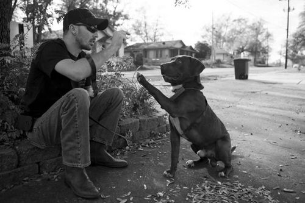

美国退休大兵领养弃犬治好创伤综合症

美国退役军人菲尔．罗达克在路易斯安那州成立狗狗训练中心，专为有创伤后压力综合征与创伤性脑损伤的人开设新兵训练营。每个退役军人必须从收容所认养一只狗狗，训练并照顾牠，许多自越南、阿富汗战场归来的老兵因此找到人生新目标。
根据Time.com报导，罗达克刚从沙场回到家庭时有很严重的PTSD症状，我酗酒，和别人处不来，每次回家检查每个房间确定没人躲在里头，睡觉的时候不断醒来检查门窗有没有锁好，次数多到数不清。我讨厌这个世界，没办法入睡，我把家人逼疯了，他们想离开我。 罗达克表示远离战火对军人反而是折磨，军人在战地基地有安全感，因为同袍会确保彼此的安危。退役回家之后，老婆出门工作、孩子上学，家里空荡荡的，没有人来确保你的安全。这会让退役军人陷入焦虑，而养狗可以解决这个问题。狗提供战友般的安全感，寸步不离、不多话，对付出的爱不求回报。这计划救人也救狗，课程结束之后，他们身边多了忠心的伙伴，也多了成就感，这种骄傲的感觉很难形容。罗达克执行的非常严谨、务实，狗狗身上的晶片记录的连络方式是训练中心的电话，而非老兵饲主的电话，考虑到的是狗狗的安全，平均每天有22名退役军人自杀，整年超过8000人，如果发生不幸，狗狗走丢后还知道该送回哪裡。